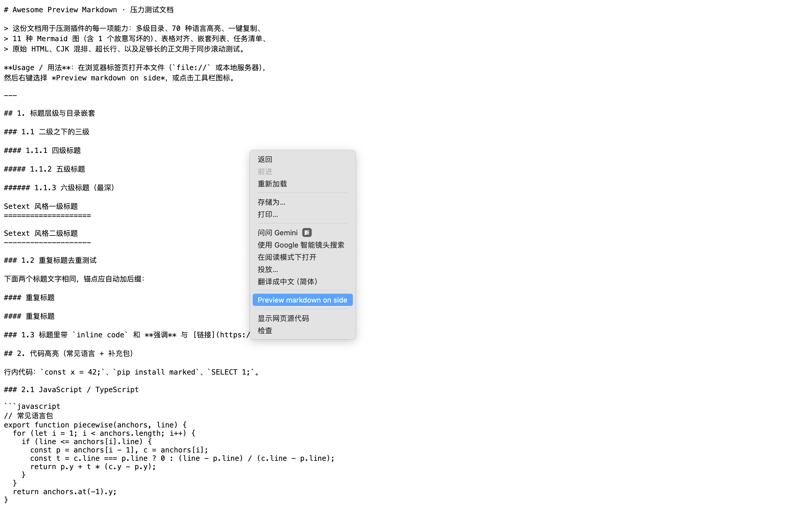
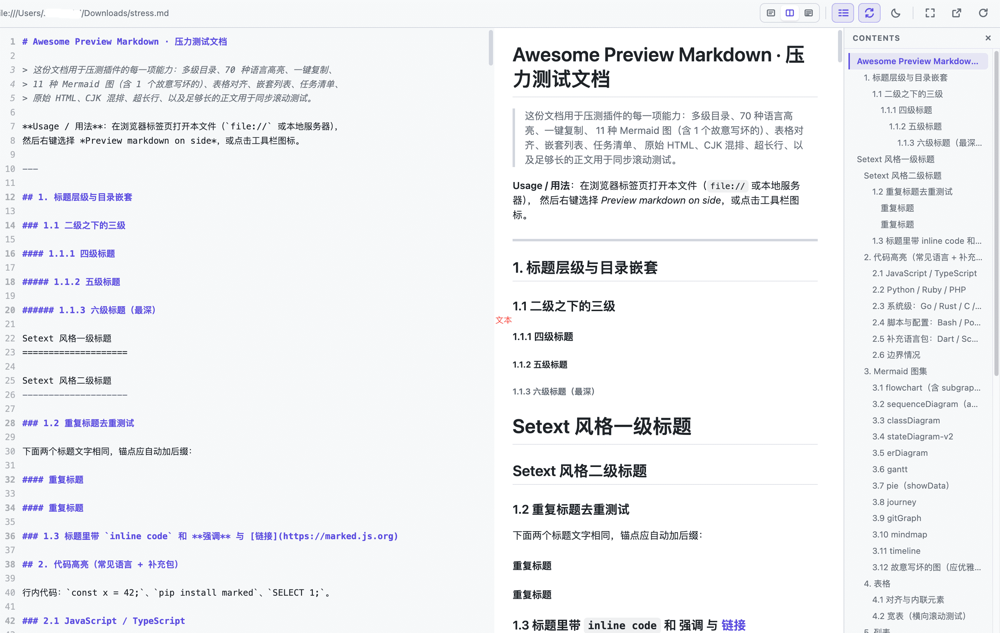
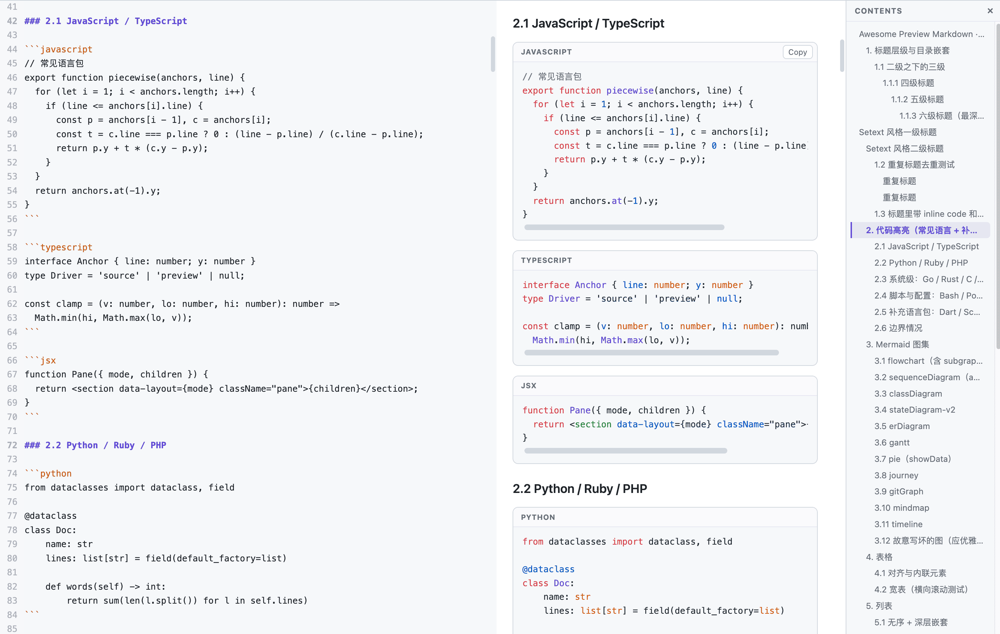
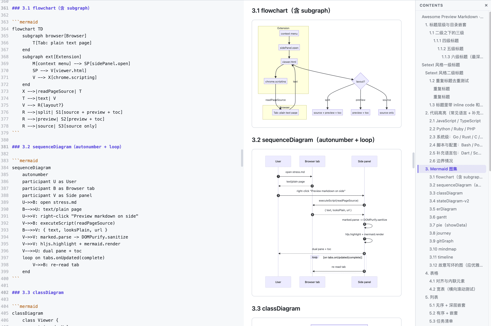
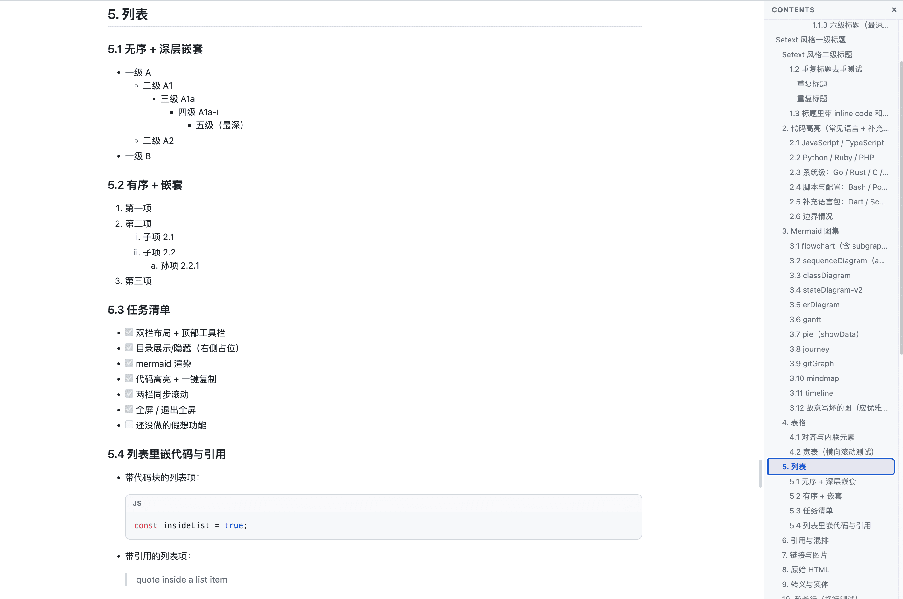

Preview local & remote Markdown in a side-by-side dual pane — with table of contents, Mermaid diagrams, syntax highlighting, one-click copy, and synchronized scrolling.
“Preview markdown on side” opens any Markdown tab in Chrome’s side panel.
Source and preview side by side with one shared toolbar and a draggable splitter.
Right-docked, in-flow TOC with scroll-spy and click-to-jump. Never floats over content.
Flowchart, sequence, class, state, ER, Gantt, pie, journey, gitGraph, mindmap, timeline.
~70 languages via highlight.js, each block labeled with a one-click Copy button.
Line-accurate two-way sync between source and preview. Toggleable.
Fullscreen preview and light/dark switching.
The browser opens content; the extension only reads the tab. No network calls of its own.
Live lines · words · KB stats, file name and reading position.
Theme, layout, TOC, sync and splitter position persist across sessions.
The preview refreshes when the source tab navigates or reloads.
On first run the theme follows your OS light/dark preference.
chrome://extensions and enable Developer mode.manifest.json).To preview local file:// Markdown, open the extension’s Details
in chrome://extensions and enable Allow access to file URLs. Remote
http(s):// files need no extra setting.
| 1 | Source-only layout |
| 2 | Split layout |
| 3 | Preview-only layout |
| T | Toggle table of contents |
| S | Toggle synchronized scrolling |
| F | Toggle fullscreen |
| D | Toggle light / dark theme |





The repo ships sample documents for testing, including a feature stress file that exercises every renderer path.
python3 -m http.server 8765
# open http://localhost:8765/samples/stress.md, then right-click → Preview markdown on side